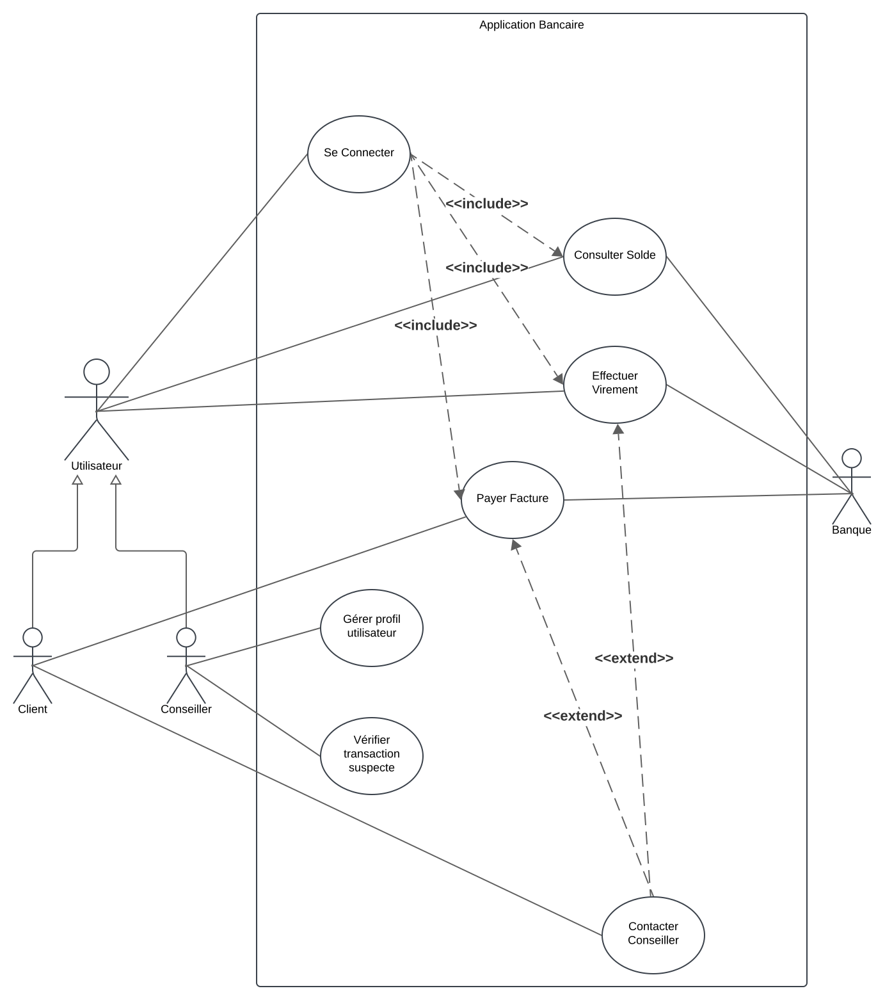
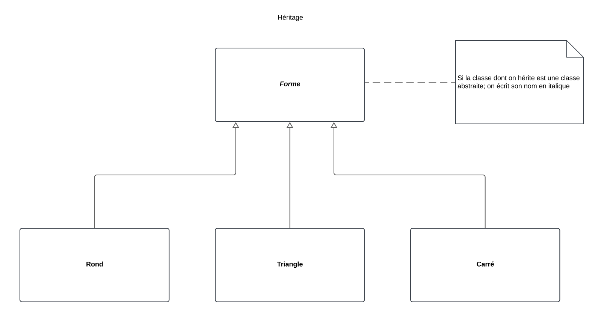
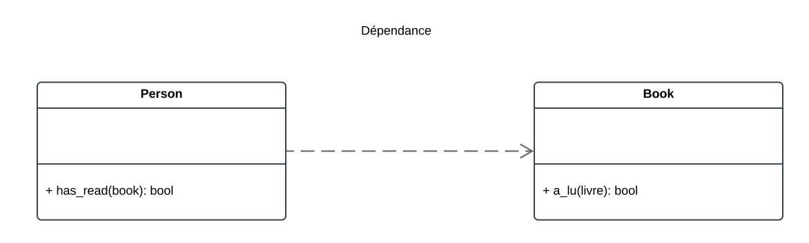
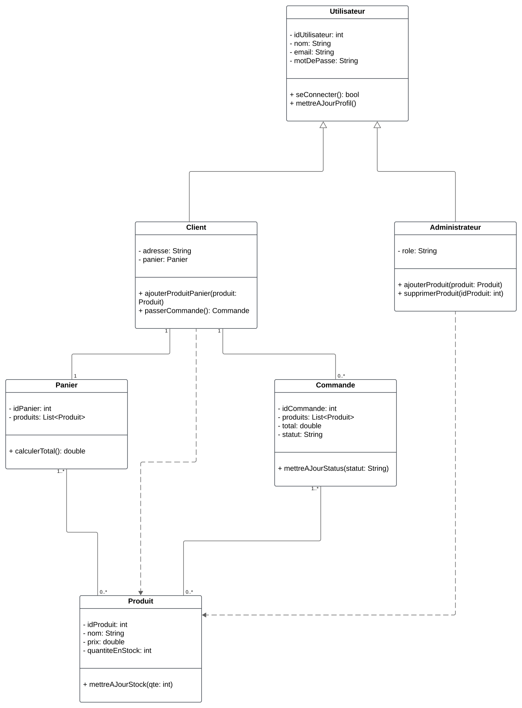

Introduction au Langage UML
Objectif
L’objectif de cette introduction est de comprendre les bases du langage UML (Unified Modeling Language), son rôle dans le développement logiciel, et les concepts fondamentaux qu’il introduit. UML est un langage de modélisation visuel qui permet de représenter les différents aspects d’un système logiciel, de la conception à l’implémentation.
Pourquoi utiliser UML ?
-
Standardisation :
- UML est un standard international largement adopté dans l’industrie pour modéliser les systèmes logiciels.
- Il favorise une compréhension commune entre les parties prenantes.
-
Communication :
- UML sert de support visuel pour faciliter la communication entre développeurs, analystes, designers et clients.
-
Documentation :
- Il fournit une documentation précise des systèmes, essentielle pour la maintenance et l’évolution des logiciels.
-
Planification et conception :
- UML aide à structurer et à planifier le développement logiciel en identifiant les composants, interactions, et flux de données.
Composantes principales d’UML
1. Les Diagrammes UML
UML se compose de 14 types de diagrammes répartis en deux grandes catégories :
- Diagrammes structurels : Illustrent la structure statique du système.
- Diagrammes comportementaux : Illustrent la dynamique et les interactions dans le système.
| Catégorie | Types de diagrammes |
|---|---|
| Structurels | Diagramme de classes, Diagramme de composants, Diagramme d’objets, Diagramme de déploiement, Diagramme de structure composite, Diagramme de paquets |
| Comportementaux | Diagramme de cas d'utilisation, Diagramme de séquence, Diagramme d'activités, Diagramme de collaboration, Diagramme d'état, Diagramme de synchronisation, etc. |
2. Concepts clés
- Acteurs : Entités externes qui interagissent avec le système.
- Objets : Instances des classes représentant des entités du système.
- Relations : Liens entre les différents éléments UML, comme les associations, généralisations ou dépendances.
- Messages : Échanges entre objets ou composants.
3. Notations standardisées
UML utilise des symboles graphiques spécifiques pour représenter les concepts :
- Rectangles : Classes ou composants.
- Ellipses : Cas d'utilisation.
- Lignes : Relations entre éléments.
- Flèches : Flux de contrôle, dépendances ou hiérarchies.
Méthodologie UML
-
Analyse des exigences :
- Identifier les besoins et les attentes des utilisateurs.
- Utiliser des diagrammes comme les diagrammes de cas d'utilisation pour modéliser ces exigences.
-
Conception du système :
- Élaborer les diagrammes structurels pour définir les composants et leurs relations.
- Utiliser des diagrammes comportementaux pour représenter les interactions et les processus.
-
Implémentation :
- Traduire les modèles UML en code source tout en respectant la structure et les interactions définies.
-
Documentation et maintenance :
- Les modèles UML servent de référence pour documenter le système et faciliter sa mise à jour.
Avantages d’UML
- Clarté : Représentation visuelle et standardisée des systèmes.
- Flexibilité : Adapté à différents types de projets, qu’ils soient petits ou complexes.
- Intégration : Peut être utilisé avec de nombreuses méthodologies de développement (Agile, Scrum, Waterfall).
- Interopérabilité : Supporté par une large gamme d’outils de modélisation.
Résumé
UML est un langage de modélisation universel et puissant, essentiel pour concevoir, comprendre et documenter des systèmes logiciels. Grâce à ses diagrammes variés et standardisés, UML favorise une collaboration efficace et facilite le développement de logiciels robustes et évolutifs.
Quiz
Diagrammes de cas d'utilisation
Objectif
Les diagrammes de cas d'utilisation sont des outils en UML qui permettent de modéliser les interactions entre un système et ses acteurs. Ils servent à capturer les exigences fonctionnelles d'un système et offrent une vue d'ensemble des fonctionnalités principales, favorisant une communication claire entre les parties prenantes.
Cas principaux d’utilisation
-
Visualisation des interactions système-utilisateur :
- Identifier les rôles des acteurs et les fonctionnalités auxquelles ils accèdent.
- Représenter graphiquement les actions clés offertes par le système.
-
Capturer les exigences fonctionnelles :
- Décrire les fonctionnalités du système de manière structurée.
- Fournir un cadre pour explorer les besoins des utilisateurs et des parties prenantes.
-
Faciliter la communication :
- Offrir un support visuel pour que toutes les parties prenantes (clients, développeurs, utilisateurs) partagent une compréhension commune.
-
Base pour la conception et les tests :
- Servir de point de départ pour élaborer des scénarios de test et des diagrammes plus détaillés (diagrammes de séquence, diagrammes d'activités).
Composants principaux
1. Système
- Définition :
Le système est l'entité étudiée ou développée. Il est représenté par un rectangle qui englobe les cas d'utilisation. - Rôle :
Il délimite le périmètre fonctionnel et clarifie ce qui est inclus dans l’analyse.
2. Acteurs
- Définition :
Un acteur est une entité externe qui interagit avec le système pour atteindre un objectif. Il peut être un utilisateur humain, un autre système ou un dispositif. - Classification :
- Acteur primaire : Initie les interactions avec le système pour accomplir une tâche spécifique.
- Acteur secondaire : Fournit un soutien ou des services au système en réponse à des requêtes.
3. Cas d’utilisation
- Définition :
Un cas d’utilisation décrit une action ou une séquence d'actions que le système effectue pour produire un résultat observable et de valeur pour un acteur. - Caractéristiques d’un bon cas d’utilisation :
- Clair et compréhensible.
- Focalisé sur un objectif précis.
4. Relations entre composants
- Association :
Représente une interaction directe entre un acteur et un cas d’utilisation. - Inclure (Include) :
Indique qu’un cas d’utilisation intègre systématiquement le comportement d’un autre cas d’utilisation. - Étendre (Extend) :
Décrit une variation optionnelle ou conditionnelle d’un cas d’utilisation. - Généralisation :
Représente une relation hiérarchique entre des cas d'utilisation ou entre des acteurs.
Structure et présentation d’un diagramme de cas d’utilisation
-
Délimitation du système :
- Représenter le système à l’aide d’un rectangle nommé.
-
Identification des acteurs :
- Ajouter les acteurs autour du système sous forme de stickmen
- Les acteurs primaires sont ajoutés à gauche du système
- Les acteurs secondaires sont ajoutés à droite du système
-
Définition des cas d’utilisation :
- Ajouter les cas d’utilisation sous forme d’ellipses à l’intérieur du rectangle du système.
-
Établissement des relations :
- Relier les acteurs aux cas d’utilisation avec des lignes simples (association).
- Définir les relations spécifiques comme
<<include>>,<<extend>>, ou des relations de généralisation si nécessaire.
Résumé
Les diagrammes de cas d'utilisation sont une méthode essentielle pour modéliser les interactions entre un système et ses utilisateurs. Ils permettent de capturer les exigences fonctionnelles de manière claire et concise, et constituent une base solide pour d'autres étapes de conception et de développement.
Exemple Concret : Gestion d'une Application Bancaire
Description du contexte :
Une application bancaire permet aux clients de gérer leurs comptes, effectuer des transactions, consulter leurs soldes, et interagir avec des conseillers. Les utilisateurs principaux sont les clients de la banque et les administrateurs du système.
Acteurs principaux :
- Client : Utilisateur principal qui accède à l'application pour gérer ses comptes.
- Administrateur du système : Responsable de la maintenance et de la gestion des données de l'application.
- Banque : Système externe intégré (exemple : passerelle pour les paiements en ligne).
Cas d'utilisation principaux :
- Se connecter : Permet au client d'accéder à l'application après authentification.
- Consulter le solde : Le client peut vérifier le solde de ses comptes.
- Effectuer un virement : Permet de transférer de l'argent entre deux comptes.
- Payer une facture : Option pour régler des factures directement via l'application.
- Contacter un conseiller : Le client peut échanger avec un conseiller par chat ou message.
- Gérer les profils utilisateurs : L'administrateur peut ajouter ou supprimer des comptes clients.
- Vérifier les transactions suspectes : L'administrateur analyse les activités inhabituelles.
Relations entre acteurs et cas d'utilisation :
- Client :
- Est associé aux cas d'utilisation suivants :
- Se connecter
- Consulter le solde
- Effectuer un virement
- Payer une facture
- Contacter un conseiller
- Est associé aux cas d'utilisation suivants :
- Administrateur du système :
- Est associé aux cas d'utilisation suivants :
- Gérer les profils utilisateurs
- Vérifier les transactions suspectes
- Est associé aux cas d'utilisation suivants :
- Banque (système externe) :
- Interagit avec :
- Effectuer un virement
- Payer une facture
- Interagit avec :
Relations spécifiques entre cas d'utilisation :
- Le cas d'utilisation Se connecter est une condition préalable pour Consulter le solde, Effectuer un virement, et Payer une facture.
- Contacter un conseiller peut être une extension en cas d’échec ou d’erreur lors d’un virement ou d’un paiement.
Description des relations UML :
- Association : Relie les acteurs aux cas d’utilisation (exemple : le client est associé au cas "Se connecter").
- Include : Le cas d’utilisation Se connecter est inclus dans tous les cas nécessitant une authentification.
- Extend : Le cas Contacter un conseiller étend les cas Effectuer un virement et Payer une facture pour gérer les erreurs.
Exemple de diagramme textuel (pour le représenter graphiquement) :
-
Acteurs :
- Client
- Administrateur du système
- Banque (système externe)
-
Cas d’utilisation :
- Se connecter
- Consulter le solde
- Effectuer un virement
- Payer une facture
- Contacter un conseiller
- Gérer les profils utilisateurs
- Vérifier les transactions suspectes
-
Relations entre acteurs et cas :
- Client —> (Se connecter, Consulter le solde, Effectuer un virement, Payer une facture, Contacter un conseiller)
- Administrateur du système —> (Gérer les profils utilisateurs, Vérifier les transactions suspectes)
- Banque (système externe) <—> (Effectuer un virement, Payer une facture)
-
Spécifications supplémentaires :
- Include : Se connecter est inclus dans tous les cas où une authentification est nécessaire.
- Extend : Contacter un conseiller étend Effectuer un virement et Payer une facture.
Correction

Quiz
Exercices
Système de Gestion de Bibliothèque
Contexte du système
Une bibliothèque municipale souhaite mettre en place un système informatique permettant de gérer les prêts de livres, les réservations, ainsi que les inscriptions des membres.
Description des fonctionnalités
-
Consultation du catalogue :
- Tout visiteur (membre ou non-membre) peut consulter le catalogue des livres disponibles, sans avoir besoin de s’identifier.
-
Prêt de livres :
- Seuls les membres inscrits peuvent emprunter des livres.
- La bibliothèque limite le nombre d’emprunts actifs à 5 livres par membre.
-
Retour de livres :
- Les membres peuvent retourner leurs livres à tout moment.
-
Réservation de livres :
- Si un livre est déjà emprunté, les membres peuvent le réserver.
- Une notification est envoyée au membre dès que le livre est disponible.
-
Inscription de nouveaux membres :
- Un visiteur peut s’inscrire comme membre en fournissant ses informations personnelles.
- L’inscription est validée par un administrateur de la bibliothèque.
-
Gestion des livres :
- Les administrateurs peuvent ajouter de nouveaux livres au catalogue, supprimer des livres ou mettre à jour leurs informations.
-
Gestion des membres :
- Les administrateurs peuvent consulter la liste des membres, suspendre un membre en cas de problème (ex. : non-retour de livres), ou modifier leurs informations.
Instructions pour réaliser le diagramme
- Identifie les acteurs principaux (ex. : visiteur, membre, administrateur).
- Définis les cas d’utilisation correspondants aux fonctionnalités décrites.
- Modélise les relations entre les acteurs et les cas d’utilisation (associations, généralisations si nécessaire).
- Si pertinent, inclue des relations entre cas d’utilisation (ex. : « inclure » ou « étendre »).
Diagrammes de Classes
Objectif
Les diagrammes de classes sont des outils fondamentaux en UML qui permettent de modéliser la structure statique d’un système. Ils représentent les classes, leurs attributs, méthodes, et relations, offrant une vue d’ensemble des éléments constitutifs d’un système logiciel.
Cas principaux d’utilisation
-
Représenter la structure statique d’un système :
- Montrer les classes, leurs propriétés, leurs méthodes, et leurs associations.
-
Faciliter la conception orientée objet :
- Identifier les objets, leurs responsabilités et leurs relations.
-
Documenter les relations entre classes :
- Fournir une vue claire des dépendances, généralisations, et associations dans le système.
-
Base pour le développement et la maintenance :
- Guider l’implémentation en traduisant les diagrammes en code source.
- Servir de référence pour la maintenance et l’évolution du système.
Composants principaux
1. Classes
-
Définition :
Une classe est une entité abstraite qui définit les propriétés (attributs) et comportements (méthodes) communs à un groupe d’objets. -
Notation UML :
Représentée par un rectangle divisé en trois parties :- Nom de la classe (en haut).
- Attributs (au milieu).
- Méthodes (en bas).
Exemple de notation

Visibilités
- Public (+) : Accessible partout.
- Privé (-) : Accessible uniquement dans la classe.
- Protégé (#) : Accessible dans la classe et ses sous-classes.
2. Relations entre classes
a. Association
- Définition :
Une relation où une classe utilise ou connaît une autre. - Notation UML :
Une ligne simple entre deux classes. - Multiciplité :
Indique combien d’instances d’une classe peuvent être associées à une autre (ex. 1..* pour une ou plusieurs instances).
| Multiplicité | Signification | Exemple d'usage |
|---|---|---|
1 | Exactement une instance est associée | Une personne a exactement un passeport. |
0..1 | Une instance est optionnelle | Un employé peut avoir aucun ou un bureau. |
* ou 0..* | Une instance peut être associée à zéro ou plusieurs | Un professeur peut enseigner à aucun ou plusieurs étudiants. |
1..* | Une instance est associée à au moins une instance | Une commande doit contenir au moins un produit. |
n | Exactement n instances sont associées | Un hexagone a exactement 6 côtés. |
n..m | Entre n et m instances sont associées | Une équipe doit avoir entre 3 et 11 joueurs. |

b. Aggregation
- Définition :
Une relation "partie-tout" où les parties peuvent exister indépendamment du tout. - Notation UML :
Une ligne avec un losange vide du côté du tout.

c. Composition
- Définition :
Une relation "partie-tout" forte où les parties ne peuvent exister sans le tout. - Notation UML :
Une ligne avec un losange plein du côté du tout.

d. Héritage (Généralisation)
- Définition :
Une relation hiérarchique où une classe hérite des propriétés et comportements d’une classe parent. - Notation UML :
Une flèche avec un triangle vide pointant vers la classe parent.

e. Dépendance
- Définition :
Une relation faible où une classe dépend de l’existence d’une autre pour fonctionner. - Notation UML :
Une flèche pointillée entre deux classes.

f. Interface
- Définition :
Une classe abstraite contenant uniquement des méthodes sans implémentation, définissant un comportement attendu. - Notation UML :
Représentée par un rectangle avec le mot-clé<<interface>>.
3. Attributs
- Définition :
Propriétés ou variables définies dans une classe. - Caractéristiques :
- Ont un nom, un type de données, et parfois une valeur par défaut.
- Peuvent être publics, privés, ou protégés.
4. Méthodes
- Définition :
Comportements ou fonctions que peut exécuter une classe. - Caractéristiques :
- Ont un nom, des paramètres, et un type de retour.
- Peuvent être abstraites (définies mais non implémentées) ou concrètes.
Structure et présentation d’un diagramme de classes
-
Identification des classes :
- Identifier les entités principales du système à modéliser.
-
Définition des attributs et méthodes :
- Ajouter les propriétés et comportements pertinents pour chaque classe.
-
Définition des relations :
- Identifier et tracer les relations pertinentes entre les classes (ex. associations, héritages, compositions).
-
Ajout des multiplicité et visibilités :
- Spécifier les règles de multiplicité et les niveaux de visibilité applicables.
Résumé
Les diagrammes de classes sont un pilier de la modélisation orientée objet. Ils offrent une vue d’ensemble claire et structurée des classes, de leurs propriétés et comportements, et des relations qui les lient. Ces diagrammes constituent une base essentielle pour concevoir, développer et maintenir des systèmes logiciels robustes.
Exemple Concret : Gestion d'un Store en Ligne
Description du contexte :
Un store en ligne permet aux clients de parcourir les produits, passer des commandes, gérer leur compte, et consulter l'historique de leurs achats. Les administrateurs peuvent gérer les produits et traiter les commandes.
Classes principales :
-
Utilisateur
- Attributs :
idUtilisateur : int- Identifiant unique pour chaque utilisateur.nom : String- Nom de l'utilisateur.email : String- Adresse e-mail de l'utilisateur.motDePasse : String- Mot de passe de l'utilisateur.
- Méthodes :
seConnecter() : bool- Permet à l'utilisateur de se connecter.mettreAJourProfil() : void- Met à jour les informations personnelles.
- Attributs :
-
Client (hérite de Utilisateur)
- Attributs :
adresse : String- Adresse de livraison du client.panier : Panier- Panier en cours d'utilisation.
- Méthodes :
ajouterProduitPanier(produit : Produit) : void- Ajoute un produit au panier.passerCommande() : Commande- Valide le panier et crée une commande.
- Attributs :
-
Administrateur (hérite de Utilisateur)
- Attributs :
role : String- Rôle ou permissions spécifiques.
- Méthodes :
ajouterProduit(produit : Produit) : void- Ajoute un produit au store.supprimerProduit(idProduit : int) : void- Supprime un produit.
- Attributs :
-
Produit
- Attributs :
idProduit : int- Identifiant unique du produit.nom : String- Nom du produit.prix : double- Prix du produit.quantiteEnStock : int- Quantité disponible.
- Méthodes :
mettreAJourStock(qte : int) : void- Met à jour la quantité en stock.
- Attributs :
-
Panier
- Attributs :
idPanier : int- Identifiant unique du panier.produits : List<Produit>- Liste des produits dans le panier.
- Méthodes :
calculerTotal() : double- Calcule le total des articles dans le panier.
- Attributs :
-
Commande
- Attributs :
idCommande : int- Identifiant unique de la commande.produits : List<Produit>- Liste des produits commandés.total : double- Montant total de la commande.statut : String- Statut actuel de la commande (ex. "En cours", "Expédiée").
- Méthodes :
mettreAJourStatut(statut : String) : void- Modifie le statut de la commande.
- Attributs :
Relations UML :
-
Héritage :
- Client et Administrateur héritent de la classe Utilisateur.
-
Association :
- Client est associé à Panier (relation 1:1).
- Client est associé à Commande (relation 1:N).
- Produit est associé à Panier (relation N:N).
- Produit est associé à Commande (relation N:N).
-
Cardinalités :
- Un Client peut avoir plusieurs Commandes, mais un Panier unique.
- Un Panier peut contenir plusieurs Produits.
- Une Commande inclut plusieurs Produits.
-
Dépendance :
- Administrateur dépend de Produit pour ajouter ou supprimer des articles du store.
Exemple de diagramme textuel (pour le représenter graphiquement) :
-
Classes et attributs :
- Utilisateur
- idUtilisateur : int
- nom : String
- email : String
- motDePasse : String
- Client (hérite de Utilisateur)
- adresse : String
- panier : Panier
- Administrateur (hérite de Utilisateur)
- role : String
- Produit
- idProduit : int
- nom : String
- prix : double
- quantiteEnStock : int
- Panier
- idPanier : int
- produits : List
- Commande
- idCommande : int
- produits : List
- total : double
- statut : String
- Utilisateur
-
Relations :
- Utilisateur <|-- Client
- Utilisateur <|-- Administrateur
- Client --> Panier (1:1)
- Client --> Commande (1:N)
- Produit --> Panier (N:N)
- Produit --> Commande (N:N)
Correction

Quiz
Exercice
Système de Gestion de Restaurant
Contexte du système
Un restaurant souhaite mettre en place un système informatique pour gérer les menus, les commandes des clients, les tables disponibles, et les employés.
Description des besoins
-
Menu :
- Un menu est composé de plusieurs plats. Chaque plat a un nom, une description, un prix et une catégorie (entrée, plat principal, dessert).
- Les menus sont modifiables par les responsables du restaurant.
-
Table :
- Une table a un numéro unique et un nombre de places disponibles.
- Une table peut être libre ou occupée.
- Les réservations peuvent être associées à une table.
-
Commande :
- Une commande est passée par un client. Elle peut contenir plusieurs plats.
- Chaque commande a un statut (en attente, en préparation, servie, payée).
- Une commande est associée à une table occupée.
-
Client :
- Un client peut passer des commandes et réserver une table.
- Les informations d’un client incluent son nom et son numéro de téléphone.
-
Employé :
- Un employé a un identifiant unique, un nom, et un rôle (serveur, cuisinier, responsable).
- Les serveurs sont associés aux tables pour la gestion des commandes.
Instructions pour réaliser le diagramme
- Identifie les classes principales à partir des éléments décrits (ex. : Menu, Table, Commande, etc.).
- Modélise les attributs nécessaires pour chaque classe (ex. : numéro de table, statut de commande).
- Décris les relations entre les classes (ex. : une commande est associée à une table, un menu contient plusieurs plats).
- Ajoute les multiplicités aux relations pour indiquer combien d’instances d’une classe peuvent être liées à une autre (ex. : une commande peut contenir plusieurs plats).
- Si nécessaire, inclue des associations spéciales comme l’héritage (ex. : un employé peut être spécialisé en serveur ou en cuisinier).
Diagrammes de Séquence
Objectif
Les diagrammes de séquence sont des outils UML utilisés pour modéliser la dynamique des interactions entre les objets d'un système. Ils illustrent l'ordre chronologique des messages échangés entre les différentes entités, offrant une compréhension claire du déroulement des processus et des scénarios d'utilisation.
Cas principaux d’utilisation
-
Modélisation des interactions dynamiques :
- Représenter l'ordre des messages échangés entre les objets.
- Visualiser le flux de contrôle entre les différentes parties du système.
-
Analyse des scénarios d'utilisation :
- Décrire comment les fonctionnalités sont réalisées à travers les interactions.
- Identifier les responsabilités des différents objets dans un processus.
-
Documentation des processus métier :
- Illustrer les workflows et les processus opérationnels.
- Faciliter la communication entre les parties prenantes en fournissant une vue séquentielle des interactions.
-
Support à la conception et au développement :
- Aider à la définition des interfaces et des protocoles de communication.
- Servir de référence pour l'implémentation des comportements dynamiques du système.
Composants principaux
1. Lifeline (ligne de vie)
- Définition :
Représente la présence d'un participant (objet ou acteur) dans l'interaction pendant une période donnée. Elle est illustrée par une ligne verticale en pointillés sous le nom du participant.
2. Messages
-
Définition :
Indiquent la communication entre les participants, représentant l'appel de méthodes ou l'échange d'informations. -
Types de messages :
- Synchronous Call : Appel bloquant où le contrôleur attend une réponse.
- Asynchronous Call : Appel non bloquant où le contrôleur continue sans attendre de réponse.
- Return Message : Réponse à un appel précédent.
- Self-Message : Un objet s'envoie un message à lui-même.
3. Activation (barre d'activation)
- Définition :
Représente la période pendant laquelle un objet est actif pour traiter une opération.
4. Fragments combinés
-
Définition :
Structures permettant de modéliser des comportements complexes tels que les conditions, les boucles et les parallélismes. -
Types courants :
- Alt (Alternative) : Représente des choix mutuellement exclusifs.
- Opt (Option) : Représente un comportement optionnel.
- Loop (Boucle) : Indique une répétition d'interactions.
5. Garde (Guard)
- Définition :
Condition booléenne qui doit être vraie pour que le message ou le fragment combiné soit exécuté. - Notation UML :
Expression entre crochets placée près du message ou du fragment concerné.
Structure et présentation d’un diagramme de séquence
-
Identification des participants :
- Déterminer les objets et acteurs impliqués dans l'interaction.
- Les représenter en haut du diagramme avec leurs lifelines correspondantes.
-
Définition des messages :
- Identifier les messages échangés entre les participants.
- Les dessiner dans l'ordre chronologique, de haut en bas.
-
Utilisation des fragments combinés :
- Appliquer des fragments pour modéliser des comportements conditionnels ou répétitifs.
- S'assurer que la logique du processus est clairement représentée.
-
Ajout des gardes :
- Spécifier les conditions nécessaires pour certaines interactions.
- Les placer de manière à clarifier le flux logique du diagramme.
Résumé
Les diagrammes de séquence sont essentiels pour visualiser et comprendre les interactions dynamiques au sein d'un système. Ils fournissent une représentation séquentielle des messages échangés entre les participants, facilitant ainsi la conception, l'analyse et la communication des comportements opérationnels du système.
Exemple Concret : Fonctionnement d'un Distributeur Automatique de Billets (DAB)
Description du contexte :
Un client utilise un DAB pour retirer de l'argent. Le processus comprend l'insertion de la carte, la saisie du code PIN, la sélection du montant à retirer, et la remise de l'argent. Le DAB interagit avec le serveur bancaire pour valider les informations et les transactions.
Acteurs principaux :
- Client : Utilise le DAB pour effectuer une transaction.
- Distributeur Automatique de Billets (DAB) : Machine exécutant les actions demandées par le client.
- Serveur Bancaire : Système qui valide les informations de la carte et autorise ou refuse les transactions.
Scénario principal :
- Le client insère sa carte dans le DAB.
- Le DAB demande la saisie du code PIN.
- Le client saisit son code PIN.
- Le DAB envoie le code PIN et les informations de la carte au serveur bancaire pour validation.
- Le serveur bancaire valide le code PIN et renvoie l'autorisation.
- Le DAB propose des options (ex. : consulter le solde, retirer de l'argent).
- Le client sélectionne l'option de retrait d'argent et saisit le montant.
- Le DAB transmet la demande de retrait au serveur bancaire.
- Le serveur bancaire vérifie le solde du compte et approuve la transaction.
- Le DAB dispense l'argent demandé.
- Le client récupère sa carte et l'argent.
Objets principaux :
- Client
- DAB
- Serveur Bancaire
Messages échangés (interaction) :
- Client -> DAB : "Insérer la carte".
- DAB -> Client : "Veuillez saisir votre code PIN".
- Client -> DAB : "Saisie du code PIN".
- DAB -> Serveur Bancaire : "Validation de la carte et du code PIN".
- Serveur Bancaire -> DAB : "Code PIN validé".
- DAB -> Client : "Options disponibles (Retirer de l'argent, Consulter le solde)".
- Client -> DAB : "Choisir retirer de l'argent".
- Client -> DAB : "Saisir le montant".
- DAB -> Serveur Bancaire : "Demande de retrait du montant".
- Serveur Bancaire -> DAB : "Transaction approuvée".
- DAB -> Client : "Dispense de l'argent et retour de la carte".
Spécifications UML des messages :
-
Synchronous Messages (Messages synchrones) :
- Utilisés pour les appels nécessitant une réponse immédiate.
- Exemples :
- DAB -> Serveur Bancaire : "Validation de la carte et du code PIN".
- Serveur Bancaire -> DAB : "Transaction approuvée".
-
Return Messages (Messages de retour) :
- Exemples :
- Serveur Bancaire -> DAB : "Code PIN validé".
- Exemples :
-
Self-Messages :
- Utilisés lorsque le DAB exécute une logique interne entre deux actions.
- Exemple :
- DAB effectue une vérification interne des données avant d'envoyer une requête au serveur bancaire.
Exemple de diagramme textuel (pour le représenter graphiquement) :
-
Lifelines (Objets) :
- Client
- DAB
- Serveur Bancaire
-
Messages :
- Client -> DAB : insérerCarte()
- DAB -> Client : afficherDemandePIN()
- Client -> DAB : saisirPIN()
- DAB -> Serveur Bancaire : validerCarteEtPIN()
- Serveur Bancaire -> DAB : retourValidationPIN()
- DAB -> Client : afficherOptions()
- Client -> DAB : choisirOptionRetrait()
- Client -> DAB : saisirMontant()
- DAB -> Serveur Bancaire : demanderRetrait()
- Serveur Bancaire -> DAB : approuverTransaction()
- DAB -> Client : délivrerArgentEtCarte()
Description des relations et détails :
- Acteurs humains et systèmes :
- Le Client agit directement avec le DAB.
- Le DAB est un intermédiaire entre le Client et le Serveur Bancaire.
- Séquences conditionnelles :
- Si le code PIN est incorrect :
- Serveur Bancaire -> DAB : "Code PIN incorrect".
- Le DAB redemande la saisie du code PIN.
- Si le solde est insuffisant :
- Serveur Bancaire -> DAB : "Transaction refusée (solde insuffisant)".
- Le DAB informe le client de l'échec.
- Si le code PIN est incorrect :
Quiz
Exercices
Système de Réservation de Voyage
Contexte du système
Une agence de voyages en ligne souhaite mettre en place un système pour permettre aux clients de rechercher des voyages, réserver des billets d’avion ou de train, et payer en ligne.
Scénario choisi : Réservation d’un billet d’avion
Description du scénario
-
Recherche d’un vol :
- Le client saisit les informations de recherche (ville de départ, ville d’arrivée, date).
- Le système affiche une liste des vols disponibles correspondant à la recherche.
-
Sélection d’un vol :
- Le client choisit un vol parmi les options affichées.
-
Réservation :
- Le client fournit ses informations personnelles (nom, adresse e-mail, numéro de téléphone) pour confirmer la réservation.
- Le système enregistre la réservation et génère un numéro de réservation unique.
-
Paiement :
- Le client saisit ses informations de paiement (numéro de carte bancaire, date d’expiration, code CVV).
- Le système vérifie les informations auprès du service de paiement.
- Si le paiement est validé, le système confirme la réservation.
-
Confirmation :
- Le système envoie un e-mail de confirmation au client avec les détails du vol et le numéro de réservation.
Instructions pour réaliser le diagramme
- Identifie les acteurs impliqués dans ce scénario (ex. : Client, Système de réservation, Service de paiement).
- Décris les messages échangés entre les acteurs et le système pour chaque étape du scénario (ex. : recherche de vol, saisie des informations, validation du paiement).
- Ajoute les retours associés à chaque interaction (ex. : liste des vols disponibles, confirmation de réservation).
- Utilise les fragments conditionnels (optionnels) si certains messages ou actions dépendent d’un résultat (ex. : paiement validé ou refusé).
- Inclue une chronologie claire montrant l’ordre des interactions entre les acteurs et le système.
Les organigrammes (Flowcharts)
Objectif
Les organigrammes, ou flowcharts, sont des diagrammes qui illustrent visuellement les étapes séquentielles d'un processus, d'un système ou d'un algorithme informatique. Ils sont utilisés pour documenter, analyser, planifier, améliorer et communiquer des processus complexes de manière claire et concise.
Cas principaux d’utilisation
-
Documentation des processus :
- Fournir une représentation visuelle des étapes d'un processus pour une meilleure compréhension et communication.
-
Analyse et amélioration des processus :
- Identifier les inefficacités, les redondances ou les goulets d'étranglement dans un processus existant.
-
Planification et conception :
- Élaborer de nouveaux processus ou systèmes en définissant clairement chaque étape nécessaire.
-
Formation et éducation :
- Aider à expliquer des procédures complexes aux nouveaux employés ou aux étudiants.
-
Programmation informatique :
- Visualiser la logique d'un algorithme ou d'un programme avant son codage.
Composants principaux
1. Symboles de base
-
Ovale (Terminaison) :
- Définition : Indique le début ou la fin d'un processus.
- Utilisation : Placé aux points de départ et de conclusion de l'organigramme.
-
Rectangle (Processus) :
- Définition : Représente une étape ou une action spécifique dans le processus.
- Utilisation : Utilisé pour décrire une opération ou une tâche.
-
Losange (Décision) :
- Définition : Indique un point où une décision doit être prise, menant à des chemins différents.
- Utilisation : Utilisé pour représenter des questions oui/non ou vrai/faux.
-
Parallélogramme (Entrée/Sortie) :
- Définition : Représente l'entrée de données dans le système ou la sortie de résultats.
- Utilisation : Utilisé pour montrer les points où des informations sont introduites ou extraites.
-
Flèches (Flux de contrôle) :
- Définition : Indiquent la direction du flux entre les étapes du processus.
- Utilisation : Connectent les différents symboles pour montrer la progression.
2. Connecteurs
-
Connecteur sur page :
- Définition : Petit cercle utilisé pour connecter des parties de l'organigramme sur la même page.
- Utilisation : Simplifie les diagrammes complexes en évitant des lignes croisées.
-
Connecteur hors page :
- Définition : Symbole en forme de pentagone utilisé pour indiquer que le flux continue sur une autre page.
- Utilisation : Utilisé dans des organigrammes étendus sur plusieurs pages.
3. Swimlanes (Couloirs)
- Définition :
- Divisions horizontales ou verticales de l'organigramme qui attribuent des étapes spécifiques à différentes unités, départements ou acteurs.
- Utilisation :
- Clarifient les responsabilités et les rôles dans un processus, montrant qui est responsable de chaque étape.
Structure et présentation d’un organigramme
-
Définir le processus :
- Identifier clairement le processus à modéliser, ses limites, son début et sa fin.
-
Lister les étapes :
- Énumérer toutes les étapes nécessaires du processus dans l'ordre séquentiel.
-
Déterminer les décisions :
- Identifier les points où des décisions sont prises et les résultats possibles de ces décisions.
-
Dessiner le diagramme :
- Utiliser les symboles appropriés pour représenter chaque étape et décision.
- Connecter les symboles avec des flèches pour indiquer le flux du processus.
-
Vérifier et valider :
- Examiner l'organigramme pour s'assurer de sa précision et de sa clarté.
- Le faire réviser par les parties prenantes concernées pour validation.
Résumé
Les organigrammes sont des outils précieux pour visualiser et comprendre les processus complexes. En fournissant une représentation graphique des étapes séquentielles et des décisions, ils facilitent la communication, l'analyse et l'amélioration des processus dans divers domaines, de l'ingénierie logicielle à la gestion des opérations.
Quiz
Diagrammes d'Activité
Objectif
Les diagrammes d'activité sont des représentations graphiques en UML qui illustrent les flux de contrôle et de données au sein d'un système. Ils mettent en évidence les étapes, les décisions et les interactions dynamiques entre composants, permettant de modéliser des processus, workflows ou comportements complexes.
Cas principaux d’utilisation
-
Modélisation des processus métier :
- Représenter visuellement les étapes d'un processus pour une meilleure compréhension et optimisation.
-
Analyse des workflows :
- Identifier les inefficacités, les redondances ou les goulets d'étranglement dans un flux de travail existant.
-
Conception de systèmes :
- Décrire le comportement dynamique d'un système, notamment les interactions entre composants.
-
Documentation des procédures :
- Fournir une référence claire pour les développeurs, les analystes et les parties prenantes.
Composants principaux
1. Nœuds d'action
- Définition :
Représentent des tâches ou des opérations exécutées dans le cadre de l'activité. - Notation UML :
Un rectangle aux coins arrondis contenant le nom de l'action.
2. Nœuds de contrôle
- Définition :
Coordonnent les flux entre les autres nœuds. - Types courants :
- Nœud initial : Indique le point de départ de l'activité.
- Nœud final d'activité : Termine tous les flux de l'activité.
- Nœud final de flux : Termine un flux spécifique sans arrêter l'ensemble de l'activité.
- Nœud de décision : Représente un point où une décision est prise, menant à des chemins alternatifs.
- Nœud de fusion : Combine plusieurs flux alternatifs en un seul.
- Nœud de fork : Divise un flux en plusieurs flux parallèles.
- Nœud de jonction : Combine plusieurs flux parallèles en un seul.
3. Nœuds d'objet
- Définition :
Indiquent que des instances d'un certain type peuvent être disponibles à un moment donné de l'activité. - Types courants :
- Objet : Représente des données ou des objets manipulés.
- Pin : Point d'entrée ou de sortie pour les données dans une action.
- Paramètre : Définit les entrées et sorties de l'activité.
- Buffer central : Gère les flux provenant de multiples sources et destinations.
- Magasin de données : Stocke des informations non transitoires.
4. Interruptions
-
Définition :
Les interruptions permettent de modéliser des événements qui interrompent le flux normal d'une activité. Ces interruptions peuvent être déclenchées par des erreurs, des exceptions ou des événements externes. -
Zones d'interruption :
Enclavent une ou plusieurs actions ou fragments, spécifiant les conditions sous lesquelles elles peuvent être interrompues. Ces zones sont indiquées par un contour en pointillés autour des éléments concernés. -
Flux d'interruption :
Représentent les chemins empruntés en cas d'interruption. Ils sont indiqués par une flèche en zigzag partant d'une zone d'interruption vers une action ou un nœud de contrôle.
5. Régions d'expansion
- Définition :
Enclavent un groupe de nœuds et d'arêtes qui sont exécutés plusieurs fois sur des données entrantes, une fois pour chaque élément de la collection d'entrée. - Utilisation :
Permettent de modéliser des opérations répétitives sur des collections de données.
6. Bords d'activité (Activity Edges)
- Définition :
Représentent les flux de contrôle ou de données entre les nœuds. - Types :
- Flux de contrôle : Indique le passage du contrôle d'un nœud à un autre.
- Flux d'objet : Montre le déplacement des objets ou des données entre les actions.
Structure et présentation d’un diagramme d'activité
-
Identification des actions et des décisions :
- Déterminer les étapes clés et les points de décision du processus à modéliser.
-
Définition des flux :
- Tracer les flux de contrôle et de données entre les nœuds, en indiquant clairement la séquence des opérations.
-
Utilisation des nœuds de contrôle :
- Intégrer des nœuds de décision, de fusion, de fork et de jonction pour représenter des comportements conditionnels ou parallèles.
-
Inclusion des interruptions :
- Ajouter des zones d'interruption et des flux d'interruption pour modéliser les événements pouvant interrompre le processus.
-
Ajout des nœuds d'objet et des régions d'expansion :
- Intégrer les données et les actions répétitives pour fournir un modèle complet et détaillé.
Résumé
Les diagrammes d'activité sont des outils puissants pour modéliser et analyser les processus dynamiques au sein d'un système. En incluant les interruptions, les flux de contrôle et les données, ils permettent de visualiser des comportements complexes et de fournir une base claire pour l'analyse, la conception et la communication.
Exemple Concret : Commande en Ligne
Description du contexte :
Un client en ligne peut parcourir ou rechercher des articles, consulter un article spécifique, l'ajouter au panier, visualiser ou mettre à jour le panier, et finaliser la commande via un processus de checkout. Le client peut consulter son panier à tout moment.
Étapes principales :
- Le client commence par parcourir ou rechercher des articles.
- Une fois un article trouvé, il peut choisir de voir les détails de l'article.
- L'utilisateur peut ajouter l'article au panier ou revenir à la recherche.
- À tout moment, l'utilisateur peut visualiser le panier.
- Lors de la visualisation du panier, le client peut :
- Mettre à jour la quantité des articles.
- Supprimer un article.
- Après confirmation du panier, l'utilisateur procède au checkout :
- Fournir ses informations de livraison et de paiement.
- Confirmer la commande.
- Une fois la commande validée, le système affiche un message de confirmation.
Liste des Activités :
- Démarrer : L'utilisateur arrive sur le site ou ouvre l'application.
- Parcourir ou rechercher des articles :
- Option de recherche par mot-clé ou navigation par catégorie.
- Voir les détails d'un article :
- Informations sur le produit (description, prix, avis, etc.).
- Ajouter au panier :
- Le produit sélectionné est ajouté à la liste des articles du panier.
- Visualiser le panier :
- Liste actuelle des articles, avec les options :
- Mettre à jour la quantité.
- Supprimer un article.
- Liste actuelle des articles, avec les options :
- Procéder au checkout :
- Remplir les détails nécessaires (adresse, méthode de paiement).
- Valider la commande.
- Afficher la confirmation :
- Confirmation de la commande avec numéro de suivi ou détails de paiement.
Flux d'activités :
- Début :
- Activité initiale : L'utilisateur accède au site ou à l'application.
- Choix :
- Parcourir/rechercher des articles :
- Transition vers "Voir les détails d'un article".
- Ou directement consulter le panier.
- Parcourir/rechercher des articles :
- Voir les détails d'un article :
- Décision : Ajouter au panier ou continuer à chercher.
- Ajouter au panier :
- Retour à "Parcourir/rechercher" ou transition vers "Visualiser le panier".
- Visualiser le panier :
- Mettre à jour les quantités ou supprimer un article.
- Transition vers "Procéder au checkout" ou revenir au shopping.
- Procéder au checkout :
- Fournir les informations nécessaires.
- Valider la commande.
- Afficher la confirmation :
- Fin du processus.
Exemple de diagramme textuel (pour le représenter graphiquement) :
-
Activité initiale :
- Démarrer.
-
Activités principales :
- Parcourir ou rechercher des articles.
- Voir les détails d'un article.
- Ajouter au panier.
- Visualiser le panier.
- Mettre à jour ou supprimer un article.
- Procéder au checkout.
- Afficher la confirmation.
-
Transitions :
- Démarrer --> Parcourir ou rechercher des articles.
- Parcourir/rechercher des articles --> Voir les détails d'un article.
- Voir les détails d'un article --> Ajouter au panier.
- Ajouter au panier --> Parcourir/rechercher des articles.
- Ajouter au panier --> Visualiser le panier.
- Visualiser le panier --> Mettre à jour/supprimer un article.
- Visualiser le panier --> Procéder au checkout.
- Procéder au checkout --> Afficher la confirmation.
- Afficher la confirmation --> Fin.
-
Décisions :
- Voir les détails d'un article : Ajouter au panier ou continuer à chercher.
- Visualiser le panier : Mettre à jour, supprimer, ou procéder au checkout.
Notes supplémentaires :
- L'utilisateur peut revenir à n'importe quel moment à l'activité "Parcourir ou rechercher des articles".
- Le diagramme inclut des décisions conditionnelles (par exemple, après avoir vu les détails d’un article, ajouter au panier ou continuer à chercher).
Quiz
Exercice
Système de Gestion de Candidature
Contexte du système
Une entreprise souhaite mettre en place un système pour gérer le processus de recrutement. Ce processus inclut la soumission de candidature, la validation initiale par le service des ressources humaines (RH), les entretiens, et la décision finale.
Scénario choisi : Processus de recrutement
Description du processus
-
Soumission de la candidature :
- Le candidat soumet son dossier en ligne (CV, lettre de motivation, etc.).
- Le système envoie un accusé de réception automatique au candidat.
-
Validation initiale :
- Le service RH vérifie que le dossier est complet.
- Si le dossier est incomplet, le candidat est invité à fournir les informations manquantes.
-
Évaluation préliminaire :
- Si le dossier est complet, le recruteur évalue les compétences du candidat pour déterminer s'il convient pour un entretien.
- Si le candidat est jugé inadapté, un e-mail de refus lui est envoyé.
-
Entretien :
- Si le candidat est retenu, un entretien est programmé (en présentiel ou à distance).
- Après l’entretien, le recruteur évalue les performances du candidat.
-
Décision finale :
- Si le candidat est retenu, une offre d’embauche lui est envoyée.
- Si le candidat n’est pas retenu, un e-mail de refus lui est envoyé.
Instructions pour réaliser le diagramme
- Décompose chaque étape du processus en activités claires (ex. : soumettre candidature, valider dossier, évaluer candidat, etc.).
- Utilise des décisions pour les choix conditionnels (ex. : dossier complet ou incomplet, retenu ou non).
- Ajoute des actions automatiques si nécessaire (ex. : envoi d’un e-mail de confirmation ou de refus).
- Indique le début et la fin du processus à l’aide des nœuds de début et de fin.
- Si pertinent, montre les flux parallèles (ex. : entre évaluation et entretien) pour indiquer que certaines actions peuvent se dérouler en même temps.